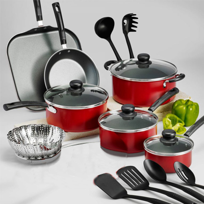
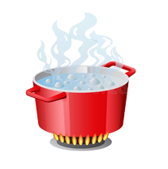
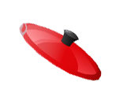

Лабораторная 3 — Flexbox (Вариант 4)
Наведи: кастрюля медленно проявляется и «дышит». Нажми/удерживай: верхняя надпись скрывается, слева — «Жаропрочная посуда», крышка хлопает. Отпусти: крышка исчезает, верхняя надпись возвращается.



Магазин «Поварёнок»
Жаропрочная посуда